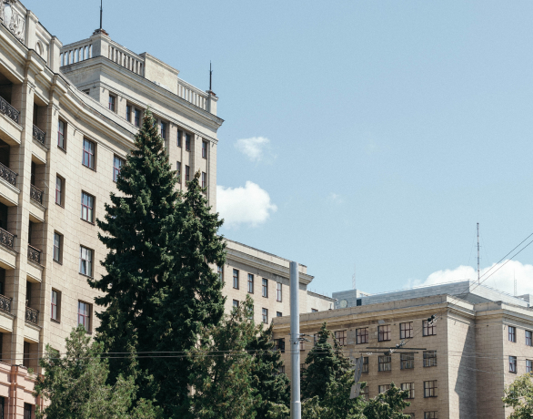

ХАРКІВ ТА ХАРКІВСЬКА ОБЛАСТЬ
наша історія
Консорціум було засновано
Консорціум було засновано
у липні 2020 року
Консорціум було засновано у липні 2020 року юр особу зарєєстровано 20 липня 2021 року. До засновників Консорціуму увійшли такі організації: ХОГО “Спілка ветеранів АТО”, ХОГО “Дружини ветеранів АТО”, ХОГО “Непереможні” та ГО “АСТ”. За партнерства та експертної підтримки Каразінського університету.
наша місія
Всебічно сприяти створенню умов кращого повсякденного життя ветеранів та їх сімей.
Надавати всебічну підтримку ветеранам та їх сім’ям за допомогою програм, проектів та освіти.